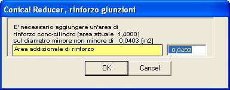

Oltre allo spessore minimo secondo UG-32(g) queste membrature devono soddisfare all’App. 1-5 riguardo alle giunzioni cono- cilindro.
Il calcolo dell’area di rinforzo necessaria e dell’area di rinforzo disponibile produce, quando la prima è superiore alla seconda, l’apparizione della finestra seguente:

Questa finestra può apparire più volte, l’una di seguito all’altra, per successive correzioni dell’area totale di rinforzo fornita.
Tali correzioni possono essere dovute ad errori dell’operatore ,o ad un fattore k maggiore di 1.